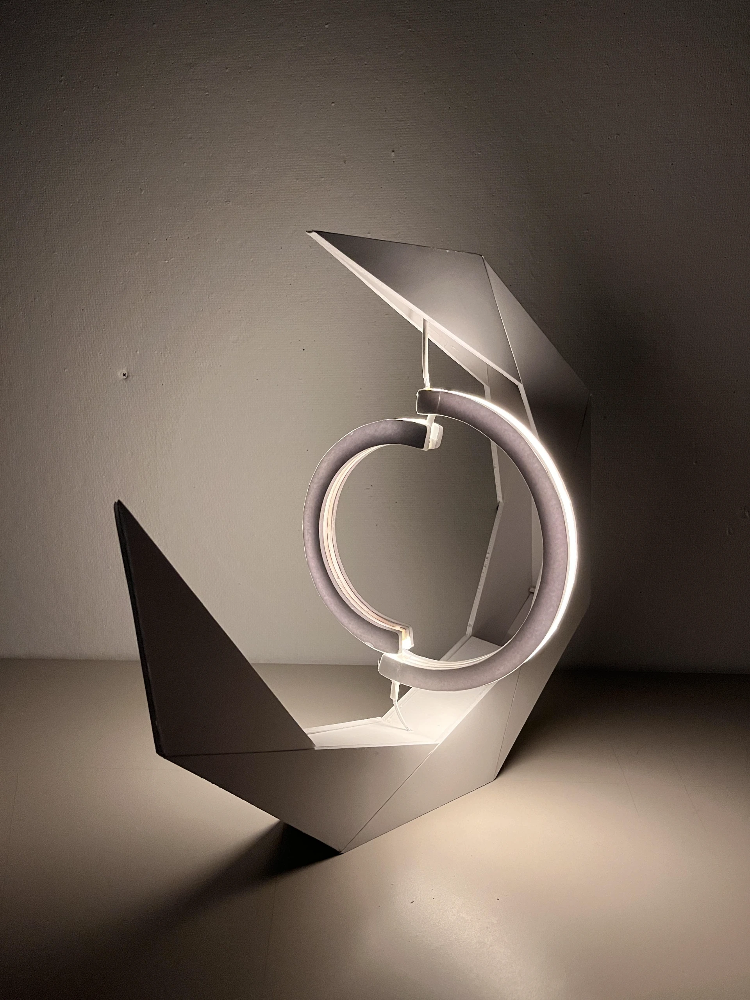
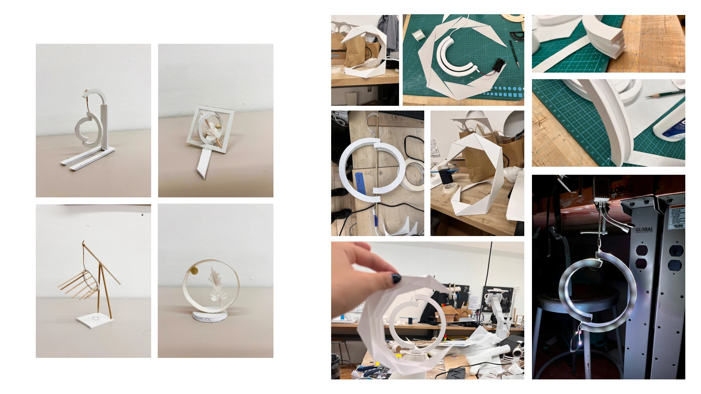
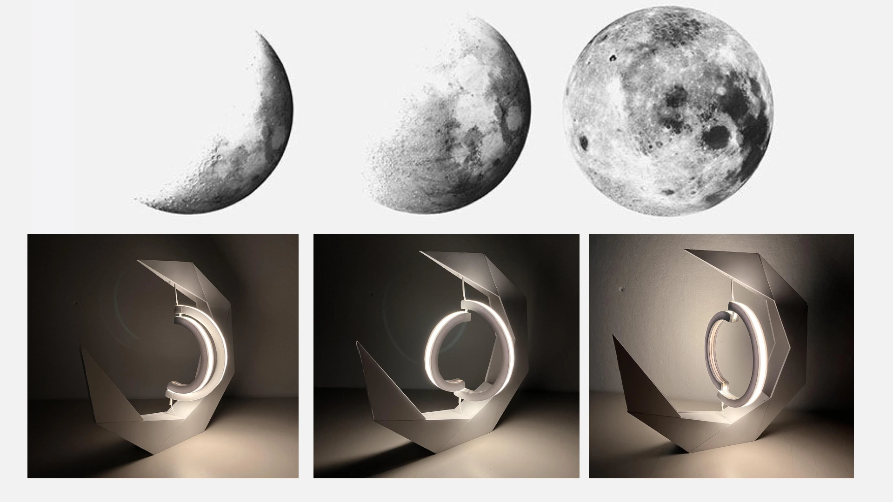

Project Overview
Inspired by the line "A bright moon rises over the sea; we share this moment though far apart," this moon lamp physically rotates to mirror the real-time shape of the moon. Even on cloudy nights, it allows people in different places to see the same moon, transforming a distant celestial event into a shared, intimate moment of connection
Design Concept
Shared Moments Across Distance
Inspired by the ancient Chinese poem "A bright moon rises over the sea; we share this moment though far apart," Moon Light creates a tangible connection between people separated by distance.
The lamp physically rotates to mirror the real-time phase of the moon, allowing loved ones in different locations to experience the same lunar beauty simultaneously.
Bringing the Cosmos Home
Even on cloudy nights when the moon is hidden from view, Moon Light ensures you never miss its cycle. The lamp becomes a window to the cosmos in your living space.
By transforming a distant celestial event into an intimate, shared moment, Moon Light bridges the gap between the astronomical and the personal.
Design Process
The design process involved extensive exploration of form, mechanism, and materiality. We experimented with various prototypes to achieve the perfect balance between aesthetic beauty and functional accuracy.

Form Exploration
Multiple design iterations explored different ways to frame the rotating moon element. From minimalist stands to sculptural bases, each prototype was tested for visual balance and mechanical stability.
Material Studies
Based the all white challenge, foamcore is my first choice of the material.
Lunar Phases in Motion

Real-Time Synchronization
The lamp connects to lunar phase data and automatically rotates to display the current moon phase. The top row shows the astronomical phases, while the bottom row demonstrates how the lamp recreates each phase through its rotating mechanism.
Poetic Illumination
From the delicate crescent to the full moon's radiance, each phase is beautifully rendered through the interplay of light and shadow. The warm glow creates an intimate atmosphere that transforms any space.
Technical Features
Automatic Rotation
Silent motor mechanism rotates the moon element to match real-time lunar phases with precision.
Smart Connectivity
Connects to lunar phase databases to ensure accurate representation, updating daily.
Warm LED Lighting
Energy-efficient LED provides soft, warm illumination that mimics natural moonlight.
Sculptural Design
Elegant geometric form serves as both functional lamp and art piece for any interior.
Impact & Future Vision
Moon Light transforms the ancient human connection to lunar cycles into a contemporary design object. It addresses the modern challenge of maintaining emotional connections across distance by providing a shared, tangible experience.
Future developments include integrating app connectivity for synchronized experiences with loved ones, customizable rotation speeds, and expanded celestial features such as star phases or planetary movements. The goal is to bring the wonder of the cosmos into everyday life, making astronomy personal and poetic.